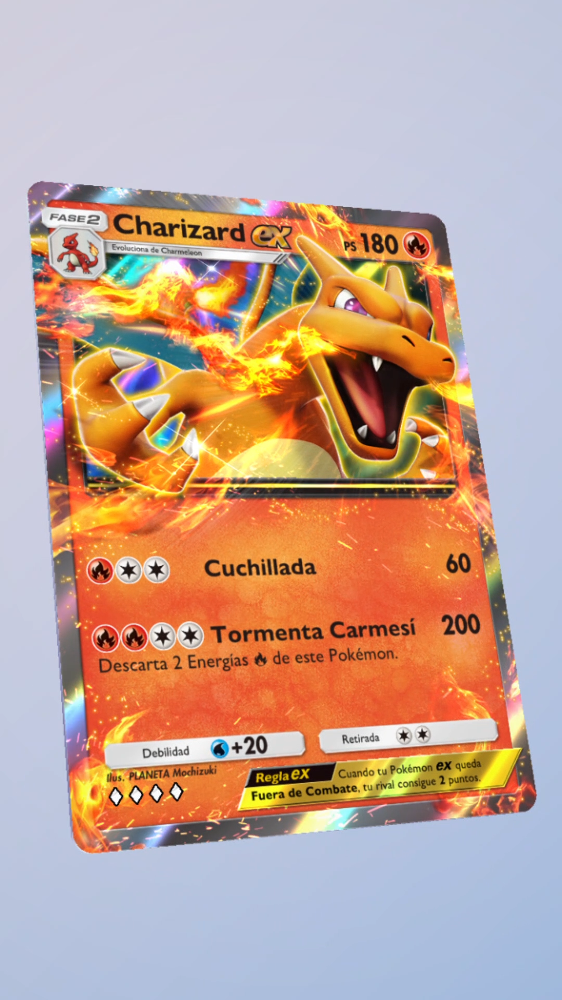
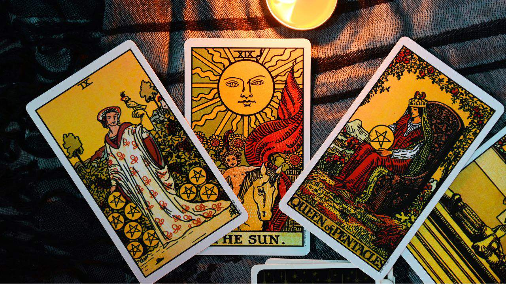
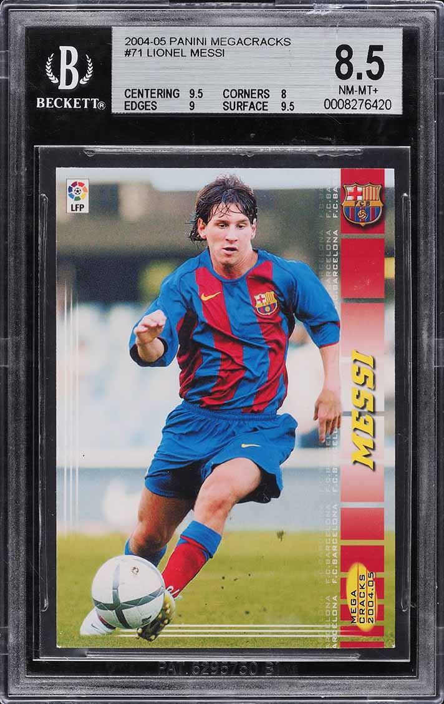
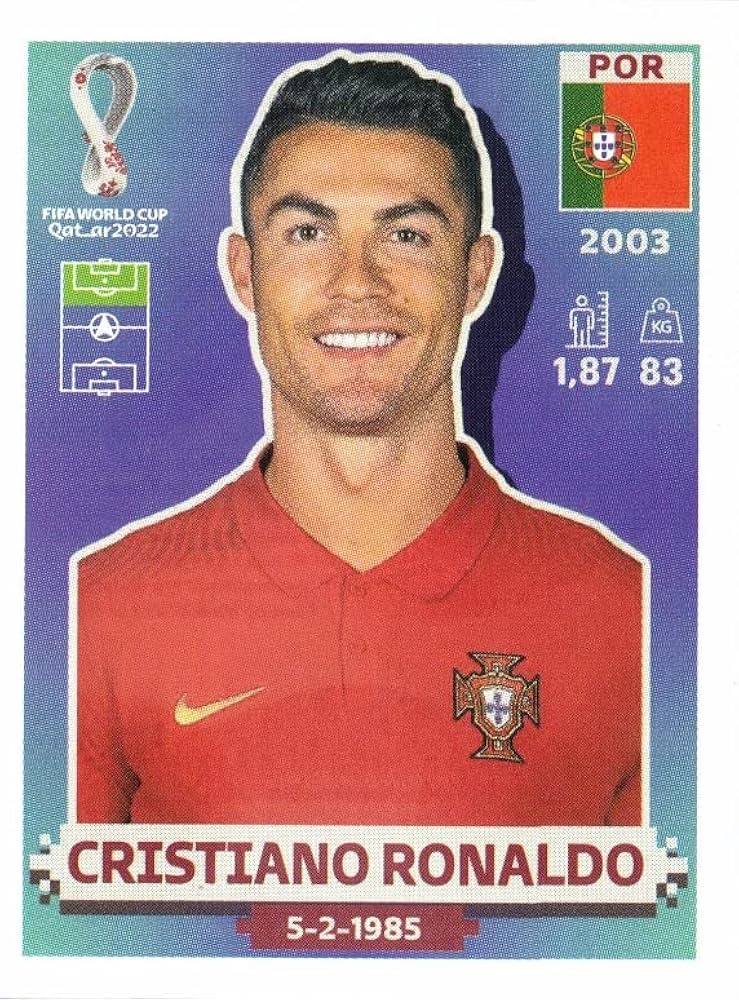

 |
Cartas de Pokemón
Las tarjetas de Pokémon son objetos coleccionables que combinan entretenimiento, estrategia y
valor emocional para millones de personas en todo el mundo. Cada carta representa a un Pokémon
con habilidades, estadísticas y diseños únicos, lo que las hace atractivas tanto para jugar como
para coleccionar.
Su importancia radica en que fomentanvínculo con la franquicia, mientras que su
carácter coleccionable se debe a la variedad,rareza y constante lanzamiento de nuevas ediciones,
lo que motiva a los aficionados a buscarlas.
|
 |
Cartas de Tarot
Las cartas del tarot tienen valor principalmente simbólico y espiritual, más que material.
Para muchas personas, son una herramienta de autoconocimiento y reflexión.
Para quienes creen en el tarot, cada mazo tiene “energía” o personalidad propia.
Por eso, algunos coleccionan diferentes barajas para distintos tipos de lecturas.
|
 |
Tarjeta coleccionable de Messi
Un cromo de Lionel Messi puede tener un valor muy variable, desde unos pocos dólares en el caso de cromos comunes hasta miles
o incluso más si se trata de ediciones raras, antiguas o en perfecto estado.
Su valor depende sobre todo de la rareza, la condición del cromo, si pertenece a un momento importante
(como su debut) y de la enorme popularidad del jugador.
|
 |
Tarjeta coleccionable de Cristiano Ronaldo
Un cromo de Cristiano Ronaldo tiene un fuerte valor sentimental para muchas personas porque representa
recuerdos de infancia, momentos de emoción al abrir sobres y la admiración por un jugador que ha marcado
épocas en el fútbol.
su valor monetario puede ir desde unos pocos euros en cromos comunes hasta miles en piezas raras y bien conservadas.
|